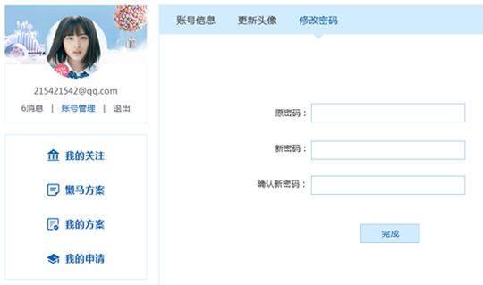
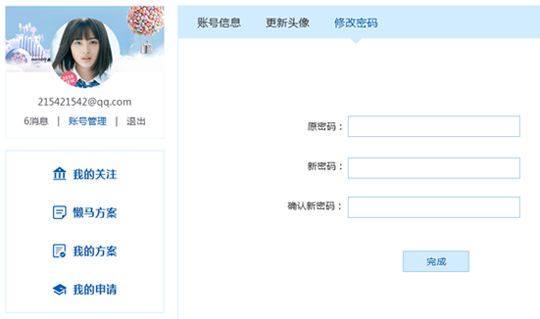

网站登录方式都有哪些？
( 1 ) 网站注册用户可通过用户名/手机号/邮箱进行登录；
( 2） 其他用户可通过第三方登录方式进行登录目前我网站支持QQ/微信、微博
如何修改登录密码？
进入“个人中心->账号管理->修改密码”，填写旧密码并设置新的密码，保存后更新
( 1 ) 网站注册用户可通过用户名/手机号/邮箱进行登录；
( 2） 其他用户可通过第三方登录方式进行登录目前我网站支持QQ/微信、微博
进入“个人中心->账号管理->修改密码”，填写旧密码并设置新的密码，保存后更新
